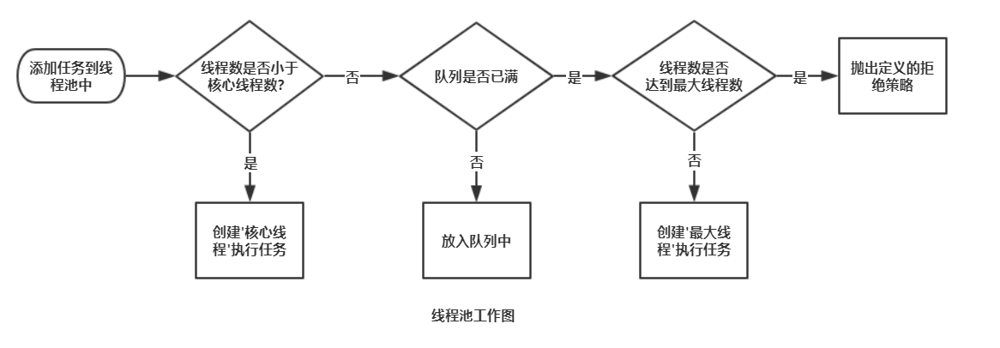
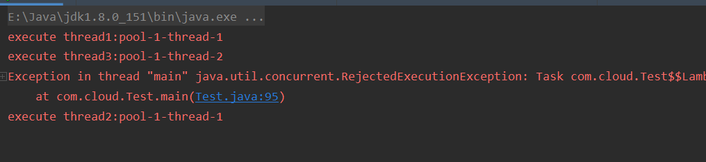

首先我们知道线程对于操作系统来说是一种珍贵的资源，像我们如果每次使用到的时候手动创建，线程执行完run()方法后又自动关闭，下次用的时候还得手动创建，这样无论对于操作系统还是我们来说都是一种时间和资源的浪费，所以我们可以选择维护一些线程，这些线程在执行完任务之后继续执行其他收到的任务，从而实现资源的复用，这些线程就构成了平时说的线程池。其能带来许多的好处，比如：
实现线程资源复用。减少手动关闭线程的资源浪费。
一定幅度提升响应速度。在线程池承受范围内（指还能接收任务的状态）线程可以直接使用，而不用进行手动创建。
方便线程的管理。把线程集中在一起可以让我们统一的设置其状态或者超时的时间等，从而达到我们预期的状态，此外还能减少OOM的发生，比如说如果我们因为一些失误操作而导致在某个地方不断的创建线程，那么会导致系统奔溃，但是如果使用线程池我们可以设定同时执行任务的线程上限和能接收的最大任务数，可以很好的避免这种情况。（当然这是建立在你的最大线程数和任务数处于合理的范围内）
我们知道在线程的生命周期中（关于线程生命周期可以看看我的另一篇文章——Java线程状态和关闭线程的正确姿势），线程正常执行完run()方法就结束进入终止状态了，那么线程池是如何实现一个线程在执行完一个任务之后不进入死亡而继续执行其他任务的呢？
其实大家大概都能猜到其内部肯定是使用一个while循环来不断获取任务执行，那我们来看看其内部大概是如何实现的，首先看下execute()方法：
public void execute(Runnable command) {
if (command == null)
throw new NullPointerException();
// 这些花里胡哨的可以不用管，大概逻辑就下方3.1节的线程池工作流程，关键的是找到线程的启动方法start()
int c = ctl.get();
if (workerCountOf(c) < corePoolSize) {
// 其线程的启动方法就放在这里的addWorker方法中
if (addWorker(command, true))
return;
c = ctl.get();
}
// some code....
}点进去我们可以看到其实现逻辑，这里删减一些逻辑以便更加清晰的看清楚：
private boolean addWorker(Runnable firstTask, boolean core) {
// some code...
Worker w = null;
try {
w = new Worker(firstTask);
final Thread t = w.thread;
if (t != null) {
// code...
if (workerAdded) {
/*
* 可以看到线程是从这里开始启动的，我们找到t的根源，发现是Worker中的thread对象
* 而我们传进来的执行也被传入worker中
*/
t.start();
workerStarted = true;
}
}
} finally {
// ...
}
return workerStarted;
}再跟进worker的构造方法中，看到thread是使用线程工厂创建的，而创建方法则是把自身传了进去（内部类Worker实现了Runnable方法）
Worker(Runnable firstTask) {
setState(-1); // inhibit interrupts until runWorker
this.firstTask = firstTask;
this.thread = getThreadFactory().newThread(this);
}也就是说thread中runnable对象就是Worker本身，调用thread.start()方法会调用Worker的run()方法，那么在上方使用t.start()启动线程后就会调用Worker的run()方法，让我们来看下Worker的run()方法做了什么。
// 调用runWorker()
public void run() {
runWorker(this);
}
final void runWorker(Worker w) {
Thread wt = Thread.currentThread();
Runnable task = w.firstTask;
w.firstTask = null;
try {
// while循环不断的从队列中获取任务执行，直到满足条件退出循环
while (task != null || (task = getTask()) != null) {
w.lock();
try {
// 默认空实现，可以重写此方法以便在线程执行前执行一些操作
beforeExecute(wt, task);
try {
// 直接调用task的run方法，而task就是我们传进来的runnable
task.run();
} catch (Exception x) {
thrown = x; throw x;
} finally {
// 同上，钩子方法
afterExecute(task, thrown);
}
}
}
// other code
} okay，到这里我们就知道了线程池是如何实现线程执行完任务复用的，跟我们一开始想的差不多就是使用一个while循环不断从队列中获取任务，显式的调用任务的run()方法，直到没有队列为空(或者其他错误因素而退出循环)。
首先先上一张线程池的工作图，根据工作图来理解线程池的工作流程，记住这张工作图对理解线程池有很好的帮助。

- 在执行
Executor.execute(runnable)或者submit(runnable/callable)的时候，检查此时线程池中的线程数量是否达到核心线程数，如果还没有，则创建'核心线程'执行任务。（可以理解为在线程池中分为'核心线程'和'最大线程'两种种类的线程，'最大线程'在空闲一段时间之后就自己关闭，'核心线程'则会一直尝试获取工作）- 如果达到核心线程数，那么检查队列是否已满，如果没满，则将任务放入队列中等待消费。（在线程池中任务和线程不会直接交互，一般都会维护一个阻塞队列，任务来的时候尝试放入队列中，而线程则是统一从队列中拿取任务执行）
- 如果队列已满，那么检查线程数量是否达到最大线程数，如果没有的话则创建'最大线程'执行任务，否则的话则执行拒绝策略。
我们先通过较底层的一个类ThreadPoolExecutor来创建。
public class Test {
/* -----为了便于理解，可以把线程池中的类型分成两类——[核心线程]和[最大线程]------ */
/* -----可以直接看main方法的例子，再上来看这里参数的注释方便理解------ */
/**
* 核心线程数，线程池的核心线程到达这个数值之后接收任务便不再创建线程，
* 而是放入队列等待消费，直到队列填满
*/
private static final int CORE_POOL_SIZE = 1;
/**
* 最大线程数，当队列被填满时再接收新的任务的时候就会创建'最大线程'来缓解压力，
* '最大线程'在空闲一段时间后会消亡，具体的空闲时间取决于下方的KEEP_ALIVE_TIME,
* '最大线程'达到这个数值后便不再创建,举个例子，核心线程数为1，最大线程数为2，
* 那么核心线程的数量最多为1，'最大线程'的数量最多为1(最大线程数-核心线程数)
*/
private static final int MAXIMUM_POOL_SIZE = 2;
/** 最大线程的空闲时间，'最大线程'空闲时间达到这个数值时消亡，时间单位为下个参数TimeUnit*/
private static final int KEEP_ALIVE_TIME = 60;
/** 空闲时间的计量单位*/
private static final TimeUnit TIME_UNIT = TimeUnit.SECONDS;
/**
* 任务队列，为阻塞队列，阻塞队列的特点是
* 1.调用take()方法时，若队列为空则进入阻塞状态而不是返回空
* 2.调用put()方法时，若队列已满则进入阻塞状态
* 阻塞队列可以分为数组队列和链表队列(区别大概就是List和Linked的区别),可以通过设定
* 边界值的方式来决定队列中最多可以容纳多少任务，如果超出则创建最大线程或者采取拒绝策略
* 如果设定了边界值则为有界队列，否则则为无界队列（无界队列容易引起OOM，队列的大小应根据需求制定）
*/
private static final BlockingQueue<Runnable> BLOCKING_QUEUE = new ArrayBlockingQueue<>(1);
/** 线程工厂，由该工厂产生执行任务的线程*/
private static final ThreadFactory THREAD_FACTORY = Executors.defaultThreadFactory();
/**
* 拒绝策略，当已达到最大线程并且队列已满的时候对新来任务的处理措施，分为四种，由ThreadPoolExecutor内部类实现
* 1、ThreadPoolExecutor.CallerRunsPolicy 当前线程来执行其任务，也就是说调用executor.execute()的线程执行，
而不是线程池额外提供线程执行
* 2、ThreadPoolExecutor.AbortPolicy 直接抛出RejectedExecutionException异常。
* 3、ThreadPoolExecutor.DiscardPolicy 直接丢弃任务，不会对新来的任务进行任何处理，也不会得到任何反馈。
* 4、ThreadPoolExecutor.DiscardOldestPolicy 丢弃队列中最老的任务(指的是队列的第一个任务，调用poll()方法将其丢弃),
然后重新调用executor.execute()方法
*/
private static final RejectedExecutionHandler REJECTED_EXECUTION_HANDLER = new ThreadPoolExecutor.AbortPolicy();
public static void main(String[] args) throws InterruptedException {
// 创建一个主要线程数为1，最大线程数为2，队列大小为1的线程池
ThreadPoolExecutor executor = new ThreadPoolExecutor(CORE_POOL_SIZE,
MAXIMUM_POOL_SIZE,
KEEP_ALIVE_TIME,
TIME_UNIT,
BLOCKING_QUEUE,
THREAD_FACTORY,
REJECTED_EXECUTION_HANDLER);
// 此时线程池中没有任何线程，直接创建一个主要线程来执行
executor.execute(() -> {
try {
System.err.println("execute thread1:" + Thread.currentThread().getName());
// 睡眠1秒，验证下方的线程放入了队列中而不是再次创建线程
TimeUnit.SECONDS.sleep(1);
} catch (InterruptedException e) {
e.printStackTrace();
}
});
// 此时主要线程数已经达到最大，新来的任务放入队列中
executor.execute(() -> {
try {
System.err.println("execute thread2:" + Thread.currentThread().getName());
// 睡眠1秒
TimeUnit.SECONDS.sleep(1);
} catch (InterruptedException e) {
e.printStackTrace();
}
});
// 再次接收任务时，由于队列满了尝试创建最大线程数来执行
executor.execute(() -> {
try {
System.err.println("execute thread3:" + Thread.currentThread().getName());
// 睡眠1秒
TimeUnit.SECONDS.sleep(1);
} catch (InterruptedException e) {
e.printStackTrace();
}
});
// 线程池已经处于饱和状态，再次来任务时采取拒绝策略，这里采取的是直接报错
executor.execute(() -> {
try {
System.err.println("execute thread4:" + Thread.currentThread().getName());
// 睡眠1秒
TimeUnit.SECONDS.sleep(1);
} catch (InterruptedException e) {
e.printStackTrace();
}
});
}
}结果图：

从执行顺序可以看出是1->3->2没有4，也就很好的再现了3.1节的线程池工作的流程，线程池创建核心线程执行任务，核心线程数量达到上限(这里为1)后将新来的任务放入队列(这里大小为1)，队列满了，尝试创建最大线程执行任新的任务（这个例子也表明了最大线程执行的是新来的任务，而不是在队列头的任务），此时线程池已经饱和了，如果再来新任务根据拒绝策略响应处理，这里选择报错，所以不会执行任务4。
这里由于篇幅原因就不举例其他拒绝策略了，想要验证可以自己在本机上测试一下。
在JUC包中提供了一个Executors框架，里面提供了快速创建五种线程池的方式——newFixedThreadPool()、newSingleThreadExecutor()、newCachedThreadPool()、newScheduledThreadPool()和newWorkStealingPool()（Java1.8之后新增，这里暂不介绍，后续补充）。
newFixedThreadPool(int n)：创建一个核心线程数和最大线程数都为n的线程池，也就是说，线程池中只有核心线程，不会有最大线程（最大线程的容量=最大线程数-核心线程数），其使用的队列为LinkedBlockingQueue无界队列，意味着不会抛弃任何任务，也就有可能发生OOM，这是其一大缺点。 这些了解一下就行，并不需要记甚至可以忘记，前四种快速创建线程池的实质都是使用
ThreadPoolExecutor实现，只不过其参数不同罢了，其实现如下，可以看到这些参数决定了它的性质。public static ExecutorService newFixedThreadPool(int nThreads) { return new ThreadPoolExecutor(nThreads, nThreads, 0L, TimeUnit.MILLISECONDS, new LinkedBlockingQueue<Runnable>()); }
newSingleThreadExecutor()：实现方面没什么好说的，就是上述线程池的n为1，但是唯一不同的是其实现外面又包了一层。public static ExecutorService newSingleThreadExecutor() { return new FinalizableDelegatedExecutorService (new ThreadPoolExecutor(1, 1, 0L, TimeUnit.MILLISECONDS, new LinkedBlockingQueue<Runnable>())); }这一层的作用就是重写
finalize()方法，方便JVM回收的时候保证关闭线程池，关于finalize和JVM回收的可以看下我之前的另一篇 JVM垃圾回收的文章。// 具体实现 static class FinalizableDelegatedExecutorService extends DelegatedExecutorService { FinalizableDelegatedExecutorService(ExecutorService executor) { super(executor); } // 重写了finalize()方法，保证线程池回收的时候先执行完剩下的任务 protected void finalize() { super.shutdown(); } }
newCachedThreadPool()：缓存队列，没有核心线程，最大线程数为Integer.MAX_VALUE，并且采用比较特殊的SynchronousQueue队列，这种队列实质不会占据存储空间，在任务提交到线程池中，如果没有任务接收任务，那么此时就会进入阻塞状态，同理线程从队列拿任务也是一样，不过这里的最大线程数为Integer.MAX_VALUE，所以每次来新任务，如果没有空闲线程就会一直创建线程，也有可能导致OOM。public static ExecutorService newCachedThreadPool() { return new ThreadPoolExecutor(0, Integer.MAX_VALUE, 60L, TimeUnit.SECONDS, // 同步队列 new SynchronousQueue<Runnable>()); }
newScheduledThreadPool(int n)：定时线程池，核心线程数为n，最大线程数为Integer.MAX_VALUE，采用延时队列DelayedWorkQueue实现，非常适合定时任务的实现。public ScheduledThreadPoolExecutor(int corePoolSize) { super(corePoolSize, Integer.MAX_VALUE, 0, NANOSECONDS, new DelayedWorkQueue()); }
在《阿里巴巴开放规范》中也说道不允许使用Executors创建线程池，原因上面也大致说了，没有好好的把控资源可能导致OOM的情况。
【强制】线程池不允许使用
Executors去创建，而是通过ThreadPoolExecutor的方式，这样的处理方式让写的同学更加明确线程池的运行规则，规避资源耗尽的风险。
在日常的需求中我们难免会遇到需要多个任务同时进行的情况，这时就避免不了使用线程，如果还是使用传统的方法手动创建线程的话，那么于我们应用于系统而言都是一种资源浪费，所以我们可以考虑维护一些固定的线程重复利用，这些线程就构成了一个线程池，有效的管理这些线程可以减少损耗并且一定程度提升响应速度。
我们知道线程在调用start()方法执行完之后就会消亡，那么线程池是如何实现一直执行任务的呢？我们在execute()方法中发现了其实现的关键是内部类Worker。Worker是一个内部类，实现了Runnable接口，在线程工厂创建线程的时候会将Worker自身传进去，那么线程调用start()方法的时候必定会调用Worker的run()方法，而在Worker的run()方法中，则是采用一个while循环不断的从队列中获取任务，然后显示的执行任务的run()方法，从而实现一个线程执行多个任务。
接着我们使用图解直观的看到线程池的工作流程，并使用一小段代码来解释ThreadPoolExecutor的各项参数的意义所在，并简单的模拟了整个工作流程。
最后讲了几种快速创建线程池的方法，其本质都是调用ThreadPoolExecutor的构造方法，只是参数的不同决定了他们的不同性质，所以ThreadPoolExecutor才是根本，其他的看看就行。同时也讲明Executors创建线程池有出现OOM的隐患，所以建议使用ThreadPoolExecutor来创建。
若文章有误，希望大家帮忙指出。
即使昧着良心我也要说，"Java是世界上最好的语言。"